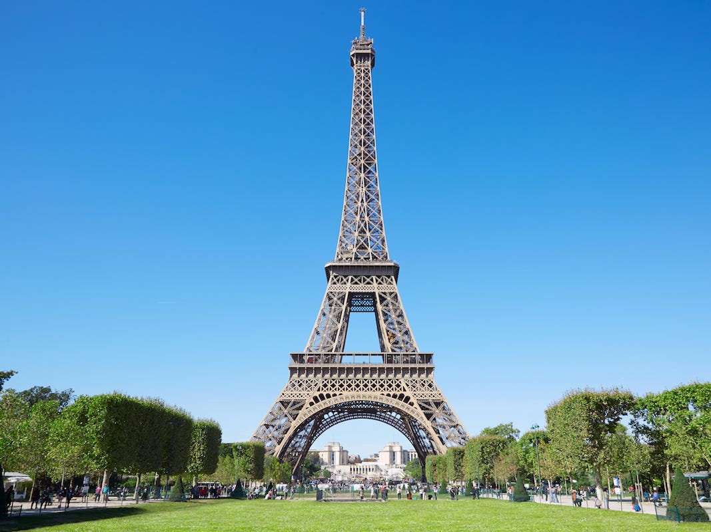
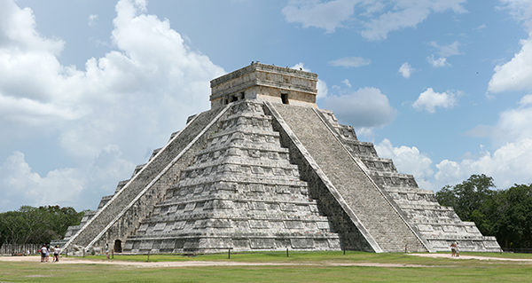
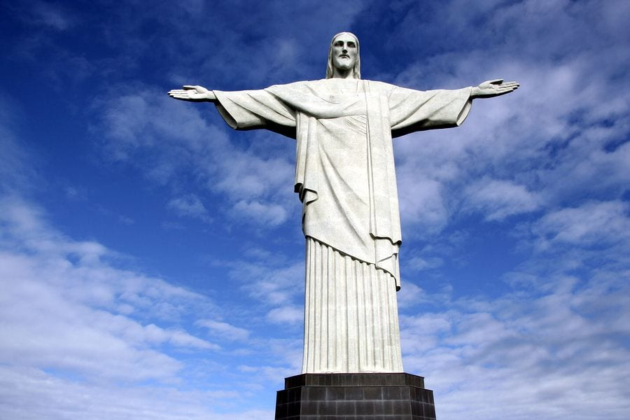
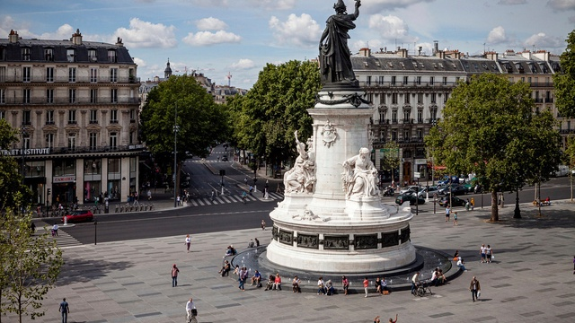

Golden Gate Bridge

See in AR
The Golden Gate Bridge is a suspension bridge spanning the Golden Gate, the one-mile-wide (1.6 km) strait connecting San Francisco Bay and the Pacific Ocean. The structure links the U.S. city of San Francisco, to Marin County. Route 1 across the strait. It was initially designed by engineer Joseph Strauss in 1917.It has been declared one of the Wonders of the Modern World by the American Society of Civil Engineers.
Eiffel Tower
See in AR
The Eiffel Tower is a wrought-iron lattice tower on the Champ de Mars in Paris, France. It is named after the engineer Gustave Eiffel, whose company designed and built the tower. Constructed from 1887 to 1889 as the entrance to the 1889 World's Fair, it was initially criticised by some of France's leading artists and intellectuals for its design, but it has become a global cultural icon of France and one of the most recognisable structures in the world. The Eiffel Tower is the most-visited paid monument in the world; 6.91 million people ascended it in 2015.
Aztec Pyramid

See in AR
The Aztecs were a Mesoamerican civilization that built massive pyramids as a way to worship their gods. Many pyramids had a temple at the top, which was often used for human sacrifice. Temples were devoted to gods and could also have the remains of kings buried within them.
Christ The Redeemer
See in AR
Christ the Redeemer is an Art Deco statue of Jesus Christ in Rio de Janeiro, Brazil, created by French sculptor Paul Landowski and built by Brazilian engineer Heitor da Silva Costa, in collaboration with French engineer Albert Caquot. Romanian sculptor Gheorghe Leonida fashioned the face. Constructed between 1922 and 1931, the statue is 30 metres high, excluding its 8-metre pedestal. The arms stretch 28 metres wide.
Place de la Republique
See in AR
The Place de la République is a square in Paris, located on the border between the 3rd, 10th and 11th arrondissements. The square has an area of 3.4 ha. It is named after the French Republic, was called the Place du Château-d'Eau until 1879, and contains a monument which includes a statue of the personification of France, Marianne.
Notre Dame de Paris

See in AR
Notre-Dame de Paris, also called Notre-Dame Cathedral, cathedral church in Paris. It is the most famous of the Gothic cathedrals of the Middle Ages and is distinguished for its size, antiquity, and architectural interest.
Pisa Tower

See in AR
The Leaning Tower of Pisa is the campanile, or freestanding bell tower, of the cathedral of the Italian city of Pisa, known worldwide for its nearly four-degree lean, the result of an unstable foundation. The tower is situated behind the Pisa Cathedral and is the third-oldest structure in the city's Cathedral Square (Piazza del Duomo), after the cathedral and the Pisa Baptistry.